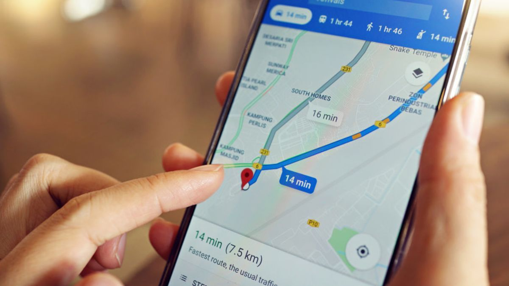

Usos actuales
Actualmente, la inteligencia artificial se utiliza en cosas como:
- Asistentes virtuales: Ayudan a responder preguntas, realizar búsquedas y ejecutar algunas tareas mediante comandos de voz.
- Sistemas de recomendación: Sugieren contenido basado en las preferencias del usuario (como Netflix y Spotify)
- Reconocimiento de voz e imágenes: Permiten interactuar con dispositivos mediante comandos de voz o identificar objetos en imágenes.
- Autonomía en vehículos: Permiten a los vehículos autónomos navegar y tomar decisiones de manera independiente.
Por otro lado, la automatización también es muy común en empresas, por ejemplo:
- Robots de producción: Realizan tareas repetitivas y precisas sin necesidad de intervención humana.
- Sistemas de gestión de inventario: Monitorean y actualizan automáticamente el stock de productos.
- Procesos de facturación automática: Generan y envían facturas sin intervención manual.
- Organizar información: Clasifican y archivan documentos de manera eficiente.
- Enviar correos automáticamente, controlar procesos: Gestionan la comunicación y el seguimiento de tareas.
Beneficios y riesgos
La inteligencia artificial y la automatización pueden traer muchos beneficios, pero también existen riesgos que es importante conocer. A continuación, se presentan algunos de ellos:
| TECNOLOGÍA | BENEFICIOS | RIESGOS |
|---|---|---|
| Inteligencia artificial | Puede realizar tareas rápidamente, como buscar información, analizar datos o generar contenido. | Puede dar respuestas que parecen correctas pero que en realidad contienen errores. |
| Puede analizar grandes cantidades de información y encontrar patrones que pueden ser difíciles de identificar para una persona. | Algunos trabajos podrían reducirse o cambiar porque ciertas tareas pueden ser realizadas por sistemas de IA. | |
| Puede servir como apoyo en la educación, el trabajo, la medicina y muchas actividades del día a día. | Algunos sistemas necesitan utilizar grandes cantidades de datos, lo que puede generar riesgos si esa información no se maneja correctamente. | |
| Automatización | Permite que una máquina o programa haga tareas que una persona tendría que repetir muchas veces. | Algunas personas podrían perder ciertas funciones laborales cuando una tarea pasa a realizarse automáticamente. |
| Los procesos pueden hacerse más rápido y durante más tiempo sin necesidad de intervención constante. | Si el sistema falla, algunas actividades pueden detenerse o ser más difíciles de realizar. | |
| Al realizar automáticamente ciertas tareas, se pueden evitar algunos errores causados por distracciones o cansancio. | Implementar máquinas o sistemas automatizados puede ser costoso, especialmente para empresas pequeñas. |
Inteligencia Artificial y Automatización en la vida cotidiana
Educación:
La IA puede ayudar a los estudiantes a resolver dudas, practicar temas o buscar información. La automatización puede utilizarse para calificar actividades o realizar procesos repetitivos.
Medicina:
Se puede utilizar para analizar información de pacientes y ayudar a detectar posibles enfermedades. También se pueden automatizar algunos procesos de atención y organización de datos.
Empresas:
La IA puede ayudar a analizar información, atender clientes y hacer recomendaciones. La automatización permite realizar tareas como enviar correos, organizar datos o controlar ciertos procesos sin hacerlo manualmente.
Entretenimiento:
La IA se utiliza para recomendar películas, canciones, videos y otros contenidos según los gustos de cada persona.
Vida cotidiana:
Está presente en asistentes virtuales, aplicaciones de mapas, sistemas de reconocimiento facial y diferentes aplicaciones que usamos normalmente sin darnos cuenta.
